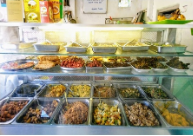
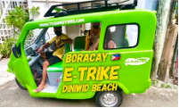
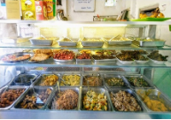
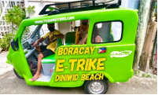

Planning your adventure in the Philippines? These travel tips will help you make the most out of your island escape smooth, safe, and unforgettable!
What to Pack
- Light, beathable clothing — It’s tropical! Bring shorts, tees, sundresses, and a light jacket for boat rides.
- Swimwear & rash gaurd — Essential for beach days, snorkeling, and island hopping.
- Waterproof dry bag — Protect your phone, wallet, and gadgets during boat rides and waterfall adventures.
- Sunscreen & bug spray — The sun can be strong, and some areas have mosquitoes—especially near rivers or forests.
- Reusable water bottle — Stay hydrated and eco-friendly while you explore.
Getting Around
- Tricycles & Habal-Habal — Local and affordable transport in towns and small islands.
- Jeepneys — Colorful and cheap public rides for short distances.
- Van & Car Rentals — Good for groups or road trips in places like Bohol or Cebu.
- Ferries & Fast Crafts — Used for inter-island travel (e.g., Cebu to Bohol).
- Flights — For long-distance travel between major islands like Manila, Palawan, and Boracay.
Staying Connected
- Buy a local SIM card (Globe or Smart) at the airport or convenience stores for affordable data.
- Most hotels, restaurants, and cafés offer free Wi-Fi, but it can be spotty in remote areas.
Food Safety & Etiquette
- Eat at places that are busy and well-reviewed—local carinderias or food markets are gems!
- Ask if the water is safe to drink—when in doubt, go for bottled or purified water.
- Try local delicacies like lechon, kinilaw, mangoes, and calamansi juice.
- Don’t forget to say "Salamat po" (Thank you, respectfully) to locals—it goes a long way.
Island Travel Tips
- Cash is king — Bring enough pesos when going to remote areas; ATMs aren’t always available.
- Respect local customs and nature—leave no trash, follow marine protection rules, and ask before taking photos of people.
- Wake up early to avoid crowds and catch the best sunrise views!
- Weather check — The dry season (Nov–May) is ideal for most outdoor activities.
❤️ Local Advice
- Be friendly! Filipinos are warm, helpful, and love tourists who appreciate their culture.
- Learn a few words:
- Hello — “Kumusta”
- Thank you — “Salamat”
- Goodbye — “Paalam”
- Always negotiate prices politely at markets or when hiring boats/trikes.
Final Tip
Plan a little, explore a lot. Some of the best memories in the Philippines come from unplanned island discoveries, quiet beaches, and spontaneous adventures.
 


